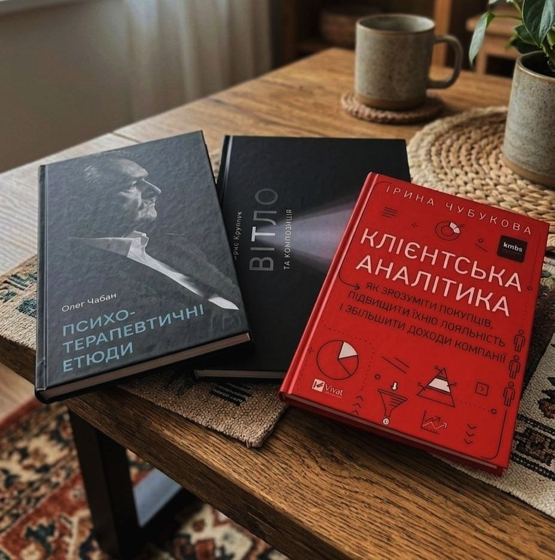

Книжковий щоденник
«Клієнтська аналітика» — вивчення методів аналізу даних для розуміння потреб аудиторії та структурування бізнес-процесів.
«Психотерапевтичні етюди» — дослідження психології, що сприяє глибшому розумінню поведінки та взаємодії людей.
«Світло та композиція» — вивчення фундаментальних правил побудови кадру, роботи з експозицією та візуального сприйняття об'єктів, що допомагає мені і у веб-дизайні.
Читати огляди